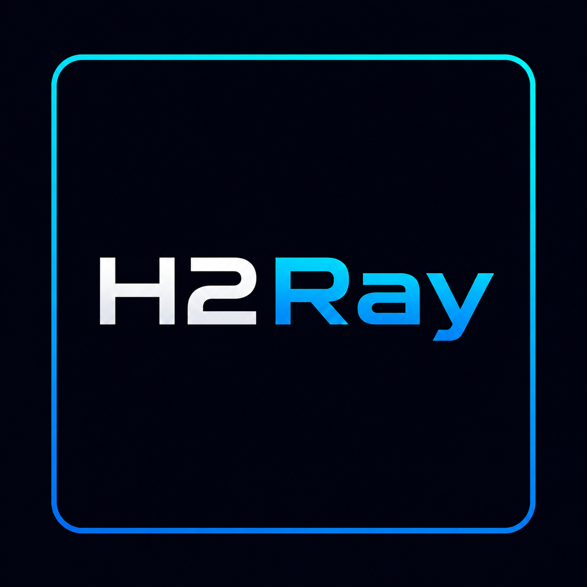

H2RayH2Ray — приватный VPN-клиент для Android с поддержкой VLESS, Reality и Trojan. Без логов, без рекламы, без компромиссов.
Оптимизированные протоколы обеспечивают минимальный пинг и стабильное соединение без просадок.
Эффективно обходит системы глубокого анализа пакетов (DPI), маскируя ваш трафик под обычный веб-серфинг.
Никакого лишнего мусора в коде. Клиент работает плавно, не нагружая систему и процессор.
Скачай актуальную сборку H2Ray прямо сейчас и забудь про ограничения.